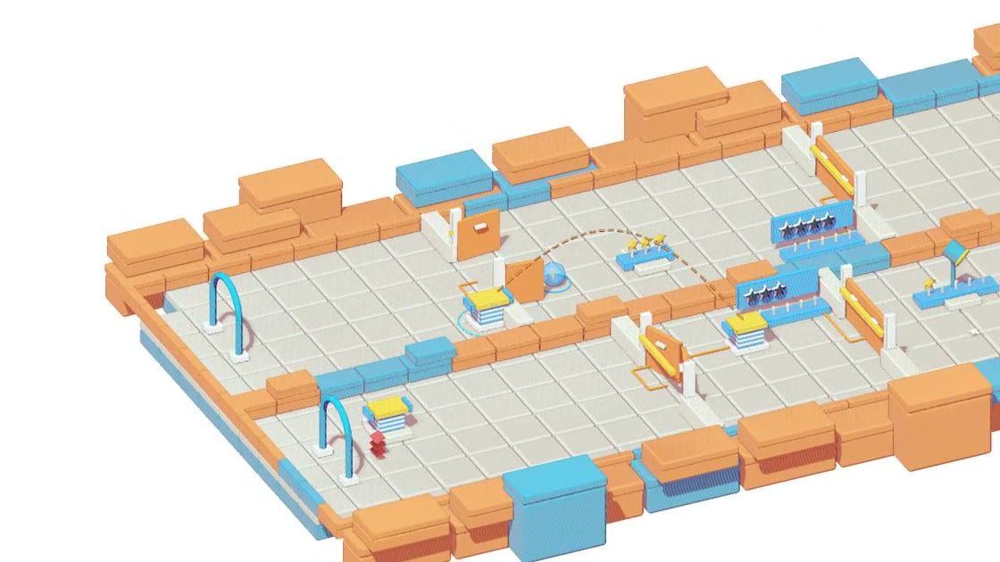

通过游戏机制、空间与图像，探索观众如何进入作品。
游戏与叙事 · 2026
一款以节点工作台展开的科幻解谜游戏，玩家通过维修、寻人和档案核验重构旧终端的来历。

游戏与关卡 · 2026
围绕“尺度变化”与“属性同步”，把抽象规则转译为直觉化的双角色空间解谜。
空间策展与视觉 · 2026
在百年古宅中统筹 50+ 件跨媒介作品，以“走近作品”的策展逻辑为观众设计接触条件。
从字形、场景互动到成组验证，拆解《巴别塔圣歌》如何把语言学转化为解谜规则。